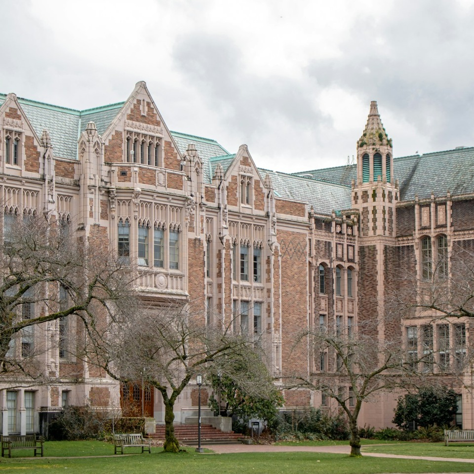

01 / 关于我们
从校园出发，
用照片记下日常
拾光摄影社是一群校园影像爱好者的练习场。无论你用手机还是相机，都可以从一束窗光、一段走廊或一条放学路开始。我们希望把摄影变成一种观察习惯：在按下快门之前，先看看光从哪里来，想想画面里最值得留下的是什么。
社团计划开展校园采风、主题练习、照片交流和学期作品展。每次活动都有一个小题目，拍摄后大家一起看图，聊聊当时为什么这样构图、怎样处理背景，也分享那些没拍成的照片。第一次参加不需要准备作品；如果你愿意慢下来观察、听听别人的看法，也愿意分享自己的发现，就欢迎加入我们。
02 / 社团活动
下一次，和我们一起拍
03 / 社团寄语墙
给下一次相遇留句话
可分享摄影灵感或活动建议；请勿填写手机号等个人信息。内容仅保存在当前浏览器。